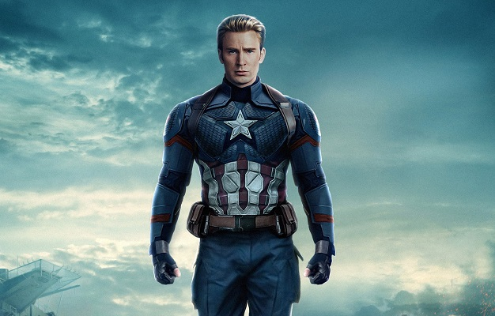

Капітан Америка (Стівен Роджерс)
Капітан Америка (англ. Captain America; справжнє ім'я — Стівен «Стів» Роджерс) — супергерой із коміксів компанії
Marvel Comics. Його створив письменник Джо Саймон і художник Джек Кірбі. Вперше з'явився в коміксі Captain America
Comics #1 (березень 1941), попереднику Marvel Comics 1940-х, Timely Comics.

Сили та здібності
- Надлюдська сила: в результаті дії сироватки суперсолдата і обробки віта-променями Капітан Америка був
перетворений зі слабкого юнака в «досконалий зразок людського розвитку і стану». Сила, витривалість, спритність,
швидкість, реакція і міцність Капітана знаходяться на піку людських можливостей. Було встановлено, що тіло
Роджерса регулярно виробляє сироватку суперсолдата; вона не зникає.
- Метаболічні функції: формула посилювала всі його метаболічні функції і запобігала накопичення в м'язах отрут
втоми, даючи йому витривалість набагато понад звичайної людської. Це пояснює багато з його екстраординарних
подвигів, Роджерс здатний підняти 5 тонн і пробігти милі за хвилину. Більш того, його посилення — причина, по
якій він зміг виживати, будучи замороженим десятиліття. Роджерс також не може сп'яніти від алкоголю і
несприйнятливий до багатьох хвороб, оскільки і зцілюється швидше, ніж звичайна людина. Завдяки прискореним
рефлексам і бойовим досвідом Стів може ухилятися від куль.
- Бойовий досвід і підготовка: Роджер має великий бойовий досвід і військовий вишкіл, які роблять його експертом з
тактики та чудовим польовим командиром: його соратники періодично підкоряються його наказам в бою. Реакція і
почуття Роджерса також виключно гострі. Він майстер безлічі бойових мистецтв. Роки практики з його незруйновним
щитом дали можливість кидати його з майже безпомилковою точністю — він може атакувати множинні цілі послідовно
одним кидком або навіть влаштовувати бумеранго-образне повернення від кидка для атаки ворога ззаду. У коміксах
інші досвідчені бійці вважають його одним з кращих рукопашних вояк у світі.